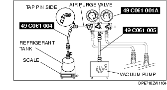
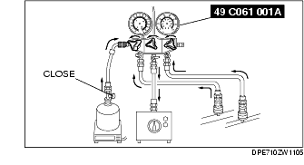
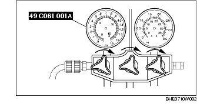
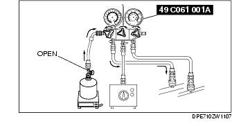
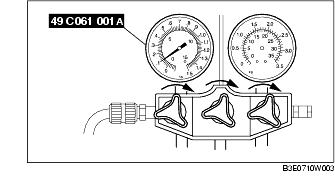
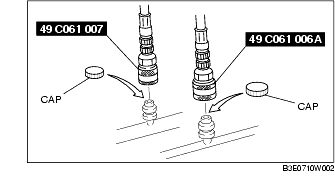

Workshop Manual ➭ HEATER, VENTILATION & AIR CONDITIONING ➭ REFRIGERANT SYSTEM ➭ REFRIGERANT CHARGING
REFRIGERANT CHARGING
id071000800400
{: #wp1059776}
Caution
• Do not exceed the specification when charging the system with refrigerant. Doing so will decrease the efficiency of the air conditioner or damage the refrigeration cycle parts.
Charging Recycled R-134a Refrigerant
- Connect an R-134a recovery/recycling/recharging device to the vehicle and follow the device manufacturer's instructions.
Charging Preparation
-
Install the SSTs (49 C061 0A0B).
-
Connect the tap pin side of the SST (49 C061 004) to the air purge valve of the SST (49 C061 001A).
-
Connect the SST (49 C061 005) to the center joint of the SST (49 C061 001A).
-
Connect the SST (49 C061 005) to the vacuum pump.
-
Connect the SST (49 C061 004) to the refrigerant tank.
-
Place the refrigerant tank on the scale.
Regular amount of refrigerant (approx. quantity)450 g {15.89 oz}

Evacuation
- Open all the valves of the SST (49 C061 001A).
Caution
• Close the SST (49 C061 001A) valve immediately after stopping the vacuum pump. If the valve is left open, the vacuum pump oil will flow back into the refrigeration cycle and cause a decrease in the efficiency of the air conditioner.
- Start the vacuum pump and let it operate for 15 min.{: #wp1060048}

- Verify that high- and low-pressure side readings of the SST (49 C061 001A) are at -101 kPa {-760 mmHg, -29.9 inHg}. Close each valve of the SST (49 C061 001A).{: #wp1060125}

Airtightness Check
-
Stop the vacuum pump and wait for 5 min.
-
Check the high- and low-pressure side readings of the SST (49 C061 001A).
• If the reading has changed, inspect for leakage and go to Evacuation. (See Evacuation.) {: #wp1060203}• If the reading has not changed, go to Charging New R-134a Refrigerant. (See Charging New R-134a Refrigerant.)
Charging New R-134a Refrigerant
-
Open the valve of the refrigerant tank.
-
Weigh the refrigerant tank to charge the suitable amount of refrigerant.
Warning
• If the refrigerant system is charged with a large amount of refrigerant when inspecting for gas leakage, and if any leakage should occur, the refrigerant will be released into the atmosphere. In order to prevent the accidental release of refrigerant which can destroy the ozone layer in the stratosphere, follow the proper procedures and charge with only a small amount of refrigerant when inspecting for gas leakage. {: #wp1063394}• If charging the system with refrigerant using service cans, running the engine with the high-pressure side valve open is dangerous. Pressure within the service cans will increase and the cans could explode, scattering metal fragments and liquid refrigerant that can seriously injure you. Therefore, do not open the high-pressure side valve while the engine is running.
Caution
• Always being charging of refrigerant from the high-pressure side. If changing is begun from the low-pressure side, the vanes of the A/C compressor will not be released and abnormal noise may result.
- Open the low-pressure side valve of the SST (49 C061 001A).{: #wp1060327}

- When the low-pressure side reading increases to 0.098 MPa {1.0 kgf/cm2, 14 psi}, close the low-pressure side valve of the SST (49 C061 001A).{: #wp1060413}

- Inspect for leakage from the cooler pipe/hose connections using the SST (49 C061 013).
• If there is no leakage, go to Step 7. {: #wp1060460}• If leakage is found at a loose joint, tighten the joint, then go to the next step.
- Inspect for leakage again.
• If there is no leakage after tightening the joint, go to the next step. {: #wp1060494}• If there is still a leakage at the same joint, discharge the refrigerant and then repair the joint. Repeat the charging procedure from evacuation.
Warning
• If charging the system with refrigerant using service cans, running the engine with the high-pressure side valve open is dangerous. Pressure within the service cans will increase and the cans could explode, scattering metal fragments and liquid refrigerant that can seriously injure you. Therefore, do not open the high-pressure side valve while the engine is running.
- Open the low-pressure side valve of the SST (49 C061 001A) and charge with refrigerant until the weight of refrigerant tank has decreased 250 g {8.83 oz} from the amount in Step 2.{: #wp1060562}

- Close the low-pressure side valve of the SST (49 C061 001A).{: #wp1060591}
Warning
• If charging the system with refrigerant using service cans, running the engine with the high-pressure side valve open is dangerous. Pressure within the service cans will increase and the cans could explode, scattering metal fragments and liquid refrigerant that can seriously injure you. Therefore, do not open the high-pressure side valve while the engine is running.
-
Start the engine and actuate the A/C compressor.
-
Open the low-pressure side valve of the SST (49 C061 001A) and charge with refrigerant until the weight of the refrigerant tank has decreased regular amount from the amount in Step 2.{: #wp1060663}
-
Close the low-pressure side valve of the SST (49 C061 001A) and the valve of the refrigerant tank.
-
Stop the engine and A/C compressor.
Leak Test
- Inspect for leakage using the SST (49 C061 013).
• If there is no leakage, go to Step 3. {: #wp1060763}• If leakage is found at a loose joint, tighten the joint, then go to the next step.
- Inspect for leakage again.
• If there is no leakage after tightening the joint, go to the next step. {: #wp1060797}• If there is still leakage at the same joint, discharge the refrigerant and then repair the joint. Repeat the charging procedure from evacuation.
-
Disconnect the SSTs (49 C061 006A, 49 C061 007) from the charging valves.
-
Install the caps to the charging valves.{: #wp1060840}
